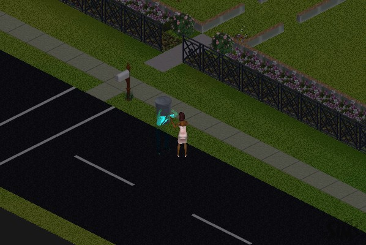
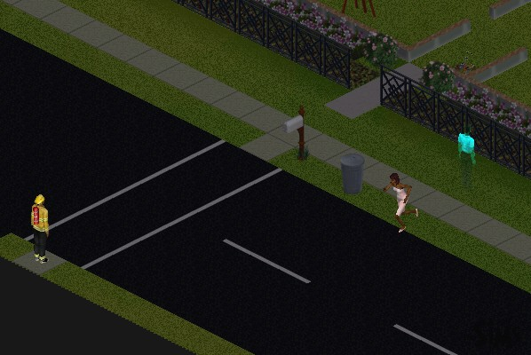
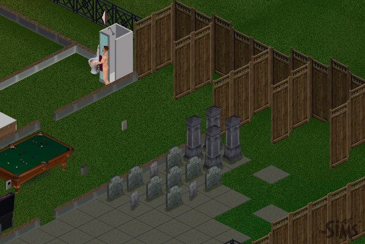
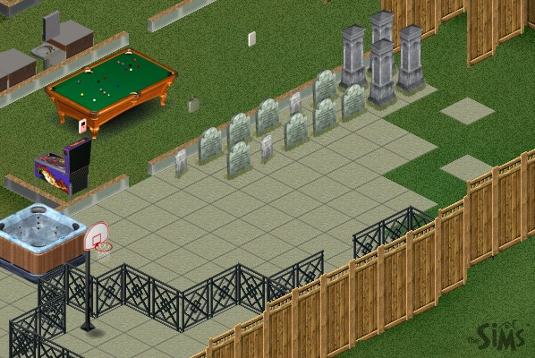
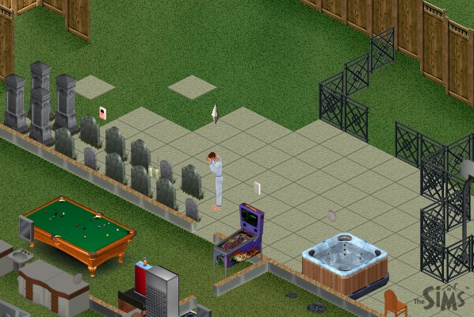

|
The Death of The Sims Part 5
 |
The ghosts start scaring her and chasing her around. As if she didn't have enough problems. However, she still won't leave! |
 |
And all this time, the fireman just stands there, never peeing himself, never starving, never getting scared, and never moving. Just like a Buckingham Palace guard! |
 |
I took the fence away so that I could get a better picture of the gravesite, and happened to catch Syd in the buff getting out of the shower. |
 |
I had to reorder the graves so that they would all fit! |
 |
However, in the process, Syd notices the gate is gone, and goes to mourn over what he's done. Is he starting to feel some pangs of guilt? |
Next Page
darkmage@gmail.com
All images and content are ©2000 Jason L. Snowden or
copyrighted by their respective companies
|